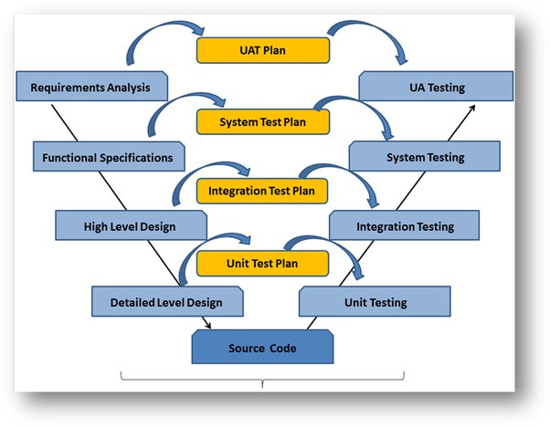
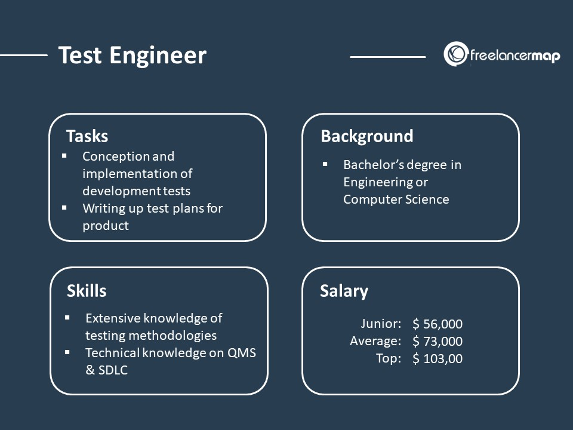

The Role of a Testing Engineer
A testing engineer, also known as a quality assurance (QA) engineer, is an integral part of the software development process. They are responsible for ensuring that software applications meet quality standards and perform as expected before being released to the end-users.
Key responsibilities of a testing engineer include:
- Test Planning: Developing comprehensive test plans outlining the testing scope, objectives, resources, and schedule.
- Test Case Development: Creating detailed test cases and test scripts based on software requirements and design specifications.
- Test Execution: Performing various types of testing such as functional testing, regression testing, performance testing, security testing, and user acceptance testing (UAT).
- Defect Identification and Reporting: Identifying, documenting, and prioritizing defects found during testing using bug tracking systems.
- Collaboration: Collaborating closely with developers, product managers, and other stakeholders to understand requirements, clarify issues, and ensure timely resolution of defects.
- Automation: Automating test cases and test processes to improve efficiency, test coverage, and regression testing.
- Quality Assurance: Ensuring that software products comply with industry standards, regulations, and best practices related to quality assurance and testing.
- Continuous Improvement: Participating in the continuous improvement of the software development process, quality assurance methodologies, and testing strategies.
- Documentation: Documenting test results, test procedures, and other relevant information to support the testing process and facilitate knowledge transfer.
- Communication: Communicating effectively with team members, stakeholders, and management to provide updates on testing progress, issues, and recommendations.
- Problem Solving: Conducting root cause analysis to identify underlying reasons for defects, performance issues, and other problems encountered during testing.


Testing engineers play a crucial role in ensuring the reliability, functionality, usability, security, and overall quality of software products, contributing to the success of software projects and the satisfaction of end-users.